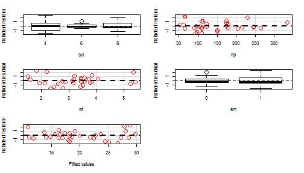
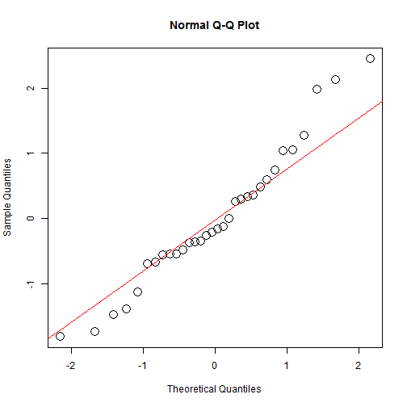

The present project predicts how many miles per galon a car spends with very basic information (number of cylindres, horsepower, weight and type of transmission). The prediction is made with the mtcars data set given in the R software.
Mauricio Henao
Coursera-Data Science
The present project predicts how many miles per galon a car spends with very basic information (number of cylindres, horsepower, weight and type of transmission). The prediction is made with the mtcars data set given in the R software.
The code that is used in the application is described below. From all the possible variables available in the data, the number of cylindres, the horsepower, the weight and the type of transmission are the most significant values to predict by a linear regresion according to the ACL criterium
set.seed(123)
mtcars2=mtcars
mtcars2$cyl=as.factor(mtcars2$cyl)
mtcars2$vs=as.factor(mtcars2$vs)
mtcars2$am=as.factor(mtcars2$am)
mtcars2$gear=as.factor(mtcars2$gear)
mtcars2$carb=as.factor(mtcars2$carb)
model1=lm(mpg~cyl+hp+wt+am,data = mtcars2)
The graph of the residuals versus the fitted values and the residuals versus each variable can be seen below:

The distribution of the residuals seem to be random and sugest a constant viarnce. Additionally, most of the residuals are between -2, 2 so it can be concluded that the assumptions of the models are met.
The residuals have a normal distribution as it is shown below:
